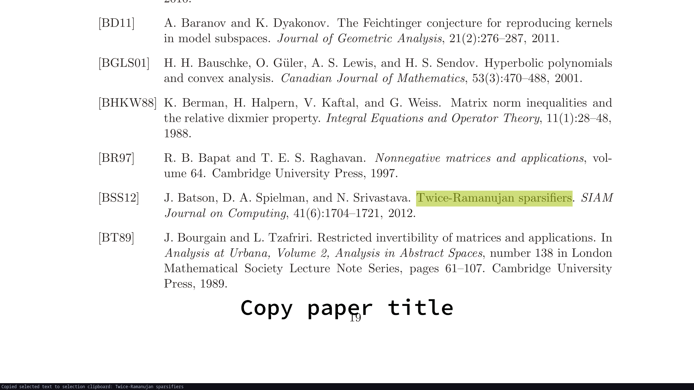
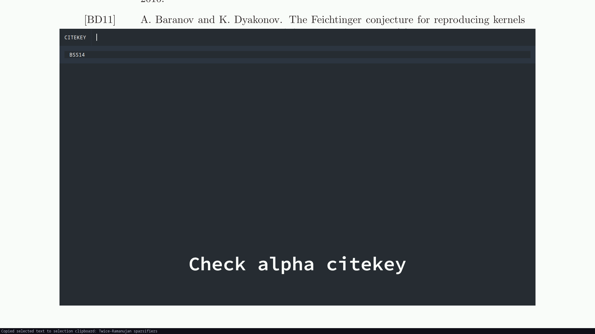

The problem: I am reading a paper, I see a citation which I want to read/add to my library.
Non-script solution:
- Copy the title and search for it on dblp
- Download the bibtex file for the conference/journal version
- Download the arxiv pdf if available, else search for the conference version and download that
- Create a citekey and add tags and add it to library
- Update local paper database and push to server.
Problem with this solution: I do not like the amount of time I spend on dblp/internet. I want to script it so that, most of the time, I don’t need to even alt-tab to add papers.
Step 1: Downloading everything relevant:
I use my bib manager with bb --paper-add. It does the following.

- Assumes the title of the paper is in the clipboard
- Gives a list of papers to choose where to download the bib file from
- Gives a list of papers to choose where to download the pdf file from
- If the pdf is on arxiv, downloads it automatically and open the pdf, else opens the paper’s url in firefox and simultaneously the paper title on google scholar.
Step 2: Add citekey and tags: Once a bib file and pdf file are downloaded, I use a bash script which does

- Run
alpha.bston the bib file to create a alpha-style citekey. If you don’t recall, this is theBSS14orShe17style citekeys. - Ask for a keyword to add to the citekey, which would be appended to the above citekey. For example,
BSS14sparseorShe17areaconvex. - Give a list of existing tags to choose from, where you can add new tags if needed. All these tags are linked to the paper. For example,
laplacian,sparsification,convexopt. This is available when searching for papers to open.
Step 3: Sync: Once I’ve added the paper to my library, I use a short bash script which runs
- Add this paper to the list I search from when I open papers, and to
$HOME/texmf/bibtex/bib/GlobalRef.bib. This is useful (I think). - Push it to server so I can access it on other devices.
Me-specific details:
- I use zathura for viewing pdfs, so I select the title of the paper and it automatically gets copied to clipboard. Maybe this is easier with sioyek since it has similar features already. You might only need to override one function.
- I use pubs for library management. Maybe you don’t need to do anything like the above if you use this-century software like zotero.
I might do some QoL upgrades later, but I think I’m pretty happy with the general setup now :)